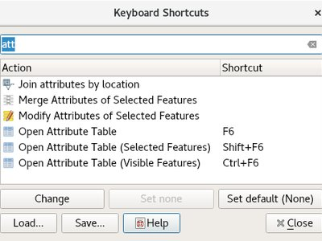
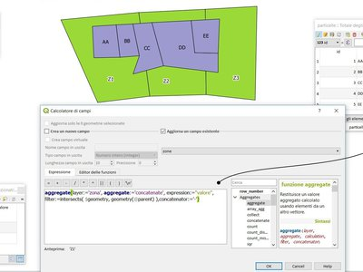
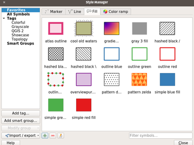
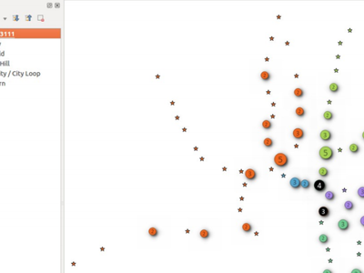
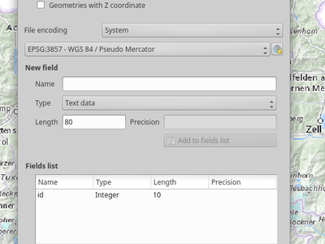
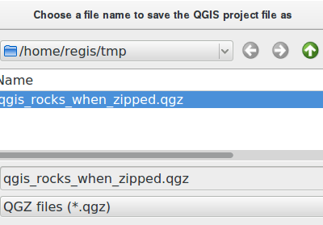
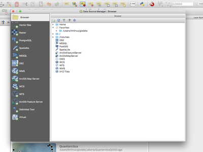
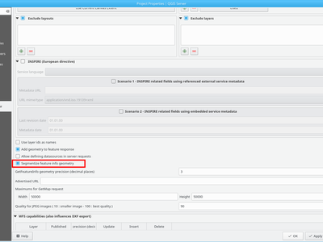

QGIS 3.0 pakeitimai¶

Geriausia visų laikų QGIS laida! QGIS 3.0 - tai didžiulis mūsų mėgstamos atviro kodo GIS perrašymas ir išvalymas. Didžiulis kiekis naujų pakeitimų - matomiausius ir svarbiausius pabandysime aprašyti čia. Kaip visada galime priminti, kad QGIS yra atviro kodo projektas ir, jei galite, pagalvokite apie paramą, sponsoriavimą arba indėlį į kodo dokumentavimą, svetainę ir pan.
Padėkos
We would like to thank the developers, documenters, testers and all the many folks out there who volunteer their time and effort (or fund people to do so). From the QGIS community we hope you enjoy this release! If you wish to donate time, money or otherwise get involved in making QGIS more awesome, please wander along to qgis.org and lend a hand!
QGIS is supported by donors and sponsors. A current list of donors who have made financial contributions large and small to the project can be seen on our donors list. If you would like to become and official project sponsor, please visit our sponsorship page for details. Sponsoring QGIS helps us to fund our six monthly developer meetings, maintain project infrastructure and fund bug fixing efforts. A complete list of current sponsors is provided below - our very great thank you to all of our sponsors!
QGIS yra atvira programinė įranga ir jums jokiu būdu nėra privaloma kiek nors sumokėti, kad galėtumėte ją naudoti. Priešingai, mes norime skatinti žmonės kuo toliau ir plačiau naudoti šią įrangą nepriklausomai nuo jūsų finansinio ir socialinio statuso - mes tikime, kad davus žmonėms erdvinių sprendimų galimybę turinčius įrankius, bus sukurta geresnė bendruomenė skirta visai žmonijai.
- QGIS 3.0 versijos rėmėjai
- Bendra
- Savybė: pašalintas priedas „zonal stats“
- Savybė: Pašalintas dxf2shp konvertavimo priedas
- Savybė: pašalintas nebeprižiūrimas oracle rastro priedas
- Savybė: TauDEM tiekėjas pašalintas iš Apdorojimo pagrindo
- Savybė: daugiau pagalbos ir galimybė konfigūruoti QGIS pagalbos failų vietą
- Savybė: Foto, TinkloPeržiūros ir FailoPavadinimo valdikliai migruoti į priedus
- Savybė: iš apdorojimo išimti otb ir libartools tiekėjai
- Naudotojo sąsaja
- Savybė: įjungti priklijuojami skydeliai su kortelėmis
- Savybė: tikslesnės raiškos mastelio keitimas pele
- Savybė: paieškos juosta klavišų kombinacijų dialoge
- Savybė: atradimo juosta
- Savybė: daugiau neblokuojančio, keitimo vietoje
- Savybė: pridėti parinktį rodyti naudotojo spalvų schemų meniu
- Savybė: galimybė keisti žemėlapio drobės šiaurės rodyklės dekoracijų spalvą
- Savybė: patobulintas žemėlapio drobės įrašymas piešiniu
- Savybė: keisti atvertų skydelių matomumą pagrindiniame lange
- Savybė: pagerintas naudotojo sąsajos pastovumas
- Savybė: atverti sluoksnius vienoje grupėje
- 3D savybės
- Išraiškos
- Savybė: nauji išraiškų kintamieji
- Savybė: naujas galobalus išraiškų kintamasis @qgis_locale
- Savybė: nauji išraiškų kintamieji žemėlapio nustatymams
- Savybė: naujos išraiškų funkcijos
- Savybė: agreguojamose funkcijose pasiekiamas kintamasis @parent
- Feature: Item_variables expression function inside compositions
- Dokumentacija
- Simbologija
- Savybė: nuo duomenų priklausantis simbolių sluoksnio matomumas
- Savybė: įrašyti ir atstatyti spalvų rampą, naudojamą vienos juostos pseudospalvų braižymui
- Savybė: prie simbolių vienetų sąrašo pridėti taškai ir coliai
- Savybė: naujas spalvų rampos mygtuko valdiklis
- Savybė: stilių tvarkymo perdarymas ir atnaujinimas
- Savybė: spalvos ir permatomumo nustatymo keliems elementams rastro braižyme palaikymas
- Savybė: spalvos mygtuko iškrentančiame meniu rodyti alfa slankiklį
- Savybė: pseudospalvų braižytojo palaikymas rastro tempimo įrankinės veiksmuose
- Savybė: permatomumo palaikymas paletės braižyme
- Savybė: rastro automatinis ištempimas atnaujinant drobę
- Savybė: anotacijų turinio paraščių kontrolė
- Savybė: galima keisti anotacijų stilių naudojant simbolinius užpildymus
- Savybė: taškų spiečiaus braižymas
- Savybė: nauji QGIS 3.0 žemėlapio spalvinimo algoritmai
- Savybė: nauja „spalvų rinkinio“ parinktis spalvų rampoje
- Savybė: leidžia laikinai išjungti simbolinius sluoksnius
- Savybė: paprastas diskretinių rastrų spalvinimas
- Etiketės
- Diagramos
- Braižymas
- Skaitmeninimas
- Savybė: viršūnių intervalo žymėjimas taško įrankyje
- Savybė: pridėta numatytosios Z reikšmės parinktis
- Savybė: geoobjekto perkėlimas dabar laimi dėl išmanesniojo skaitmeninimo
- Feature: Added functionality to copy/move feature to move feature map tool
- Savybė: braižymas su poslinkiu
- Savybė: Viršūnės įrankio perdarymas
- Savybė: viršūnės įrankis: vidurio žymekliai viršūnių pridėjimui
- Savybė: viršūnių įrankis: tęsti liniją
- Savybė: viršūnių įrankis: išmaniojo skaitmeninimo įrankinės palaikymas
- Duomenų valdymas
- Formos ir valdikliai
- Savybė: leisti kontroliuoti konkrečių redagavimo valdiklių etiketes
- Savybė: leisti konfigūruoti geoobjektų susiejimo/atsiejimo mygtukus ryšių redaktoriaus valdiklyje
- Savybė: sąlyginis kortelių ir grupių rodymas
- Savybė: išmasnesni numatytieji redagavimo valdikliai su juos parenkančiais priedais
- Savybė: laukų apribojimai gali būti įjungti arba išjungti
- Savybė: pridėti sluoksnių apimties veiksmai
- Savybė: rodyti lauko reikšmes automatiniame pabaigimo formos filtro režime
- Savybė: parinkimo dialoge pridėtos klavišų kombinacijos priartinimui prie geoobjekto ir geoobjektų mirksėjimui.
- Savybė: parinkimo formos skaitiniams laukams pridėtas tarp/ne tarp filtras
- Sluoksnių legenda
- Žemėlapio maketas
- Savybė: maketo lentelės tinklelio horizontalių ir vertikalių linijų braižymo valdymas
- Savybė: pertempkite qpt į QGIS, kad sukurtumėte naują maketą pagal šabloną
- Savybė: maketo legendos elementų etikečių tarpų tarp linijų keitimas
- Savybė: leisti keisti CRS žemėlapio elementams
- Savybė: laikant shift braižant poliliniją/poligoną, apribojami linijų kampai
- Savybė: daugiau nuo duomenų priklausančių valdiklių
- Savybė: žemėlapio maketo pertvarkymas
- Analizės įrankiai
- Apdorojimas
- Savybė: naujas linijų pastūmimo algoritmas
- Savybė: naujas vienpusių buferių algoritmas
- Savybė: pridėtas paprastinimo metodo pasirinkimas
- Savybė: išvesties geometrijų tipų palaikymas modeliuose
- Savybė: kampo riba glotninimo algoritme
- Savybė: geresnis Z/M dimensijų palaikymas ir kreivinės geometrijos
- Savybė: į apdorojimą pridėti rastro analizės algoritmai
- Savybė: naujas konkrečių viršūnių ištraukimo algoritmas
- Feature: Expose zonal statistics from Zonal statistics plugin in toolbox
- Feature: Add a spatialite execute SQL algorithm
- Savybė: naujas linijų pratęsimo algoritmas
- Savybė: naujas ištraukimo pagal išraišką algoritmas
- Feature: Add import into spatialite algorithm
- Savybė: interpoliacijos algoritmai
- Savybė: naujas geometrijos skaičiavimo pagal išraišką algoritmas
- Savybė: pritraukti geometrijas prie sluoksnio algoritmo
- Savybė: naujas įvesties tipas išraiškoms
- Savybė: SplitWithLines
- Feature: Pole of inaccessibility algorithm
- Savybė: ištraukti pagal atributą dabar gali ištraukti pagal null/notnull reikšmes
- Savybė: atributų indekso kūrimo algoritmas
- Savybė: naujas „išmesti geometrijas“ algoritmas
- Savybė: naujas universalus „bazinė lauko statistika“ algoritmas
- Savybė: intensyvumo priedas perkeltas į apdorojimo algoritmą
- Savybė: naujas geometrijų ortogonalizavimo algoritmas
- Savybė: tinklo analizės algoritmai
- Savybė: eksportuoti apdorojimo modelius kaip PDF/SVG
- Savybė: naujas lentelių išvalymo algoritmas
- Feature: Added ‘invalid feature handling’ option
- Feature: Algorithm to fix invalid geometries using native makeValid() implementation
- Feature: Add search to Get Scripts and Models dialog
- Savybė: bendrinis centroido algoritmas
- Feature: Improved Extract nodes algorithm
- Savybė: naujas taškų vertimo (perkėlimo) algoritmas
- Savybė: pagerintas apdorojimo modeliuotojo langas
- Savybė: naujas unikalių rastro reikšmių ataskaitos algoritmas
- Feature: Remove TauDEM provider from core Processing
- Savybė: atsisiųsti failą iš apdorojimo
- Savybė: optimizuotų taškų palei geometriją algoritmas
- Savybė: rikiavimo pagal išraišką algoritmas
- Programos ir projekto parinktys
- Naršyklė
- Duomenų tiekėjai
- Savybė: naujas bendras „pridėti sluoksnį“ dialogas
- Savybė: GeoPackage
- Savybė: GDAL įrašomų rastro formatų palaikymas rastro sluoksnių dialoge „Įrašyti kaip“
- Savybė: Z/M geometrijų palaikymas gpkg, spatialite ir atminties sluoksnių tiekėjuose
- Savybė: unikalių ir ne-null apribojimų valdymas
- Savybė: GeoNode integracija
- Savybė: aptikti spatialite tiekėjo numatytasias reikšmes
- Savybė: kurti spatialite tiekėjo atributų indeksą
- Savybė: pridėtas masyvų palaikymas
- Savybė: PostGIS duomenų tiekėjo HStore palaikymas
- Savybė: PostgreSQL ryšių auto-aptikimas
- Savybė: duomenų priklausomybės tarp sluoksnių
- Savybė: dxf eksportas: perprojektavimo palaikymas
- Savybė: įkelti/įrašyti GPKG ir Spatialite stilių duomenų bazėje
- Savybė: pagerintas numatytųjų dalykų apdorojimas
- QGIS Serveris
- Priedai
- Savybė: patikimo statusas atimtas iš Priedų tvarkyklės
- Savybė: keitimas neprisijungus: pridėkite požymį, kad būtų kopijuojami tik pažymėti geoobjektai
- Savybė: GDAL įrankiai perkelti į apdorojimą
- Savybė: leisti diegti priedus iš vietinių ZIP paketų
- Savybė: priedai gali teikti savo pagalbą išraiškų lange
- Programavimas
QGIS 3.0 versijos rėmėjai¶


Sidabriniai¶
 Sidabrinis : 3000 EUR
Sidabrinis : 3000 EUR
|
AERO ASAHI Korporacija |
|QGIS Danijos naudotojų grupė| QGIS Danijos naudotojų grupė |
ARTOGIS a/s |
|QGIS Vokietijos naudotojų grupė| QGIS Vokietijos naudotojų grupė |
OPENGIS.ch GmbH |
Terraplan |
Office of Public Works, Flood Risk Management and Data Management Section |
WIGeoGIS |


Bronziniai¶
 Bronzinis : 500 EUR
Bronzinis : 500 EUR
2D3D.GIS |
Integrate Sustainability Pty Ltd |
Ager Technology |
LandPlan OS GmbH |
Alta ehf |
Lutra Consulting |
Asociación Geoinnova |
MHTC Ltd |
Automatic Knowledge |
MappingGIS |
BGEO Open GIS, SL |
Mapzen |
Cawdor Forestry |
Mierune LLC |
|
Chartwell Consultants Ltd. |
OSGeo.JP |
City of Canning |
Open Geo Groep |
City of Canning |
Pixalytics |
Datenbankgesellschaft mbH |
QGIS user group Brazil |
Dr. Kerth + Lampe Geo-Infometric GmbH |
|QGIS Švedijos naudotojų grupė| QGIS Švedijos naudotojų grupė |
FORNAT AG |
QTibia Engineering |
Forest Design SRL |
Royal Borough of Windsor and Maidenhead |
GAIA mbH |
SOLTIG (Soluciones en Tecnologías de Información Geográfica) |
GIS Support Sp. z o.o. |
Septima |
|
GKG Kassel, (Dr.-Ing. Claas Leiner) |
Solargis s.r.o. |
Gaia3D, Inc. |
Syddjurs Kommune |
Gemeente Gouda |
TerreLogiche |
GeoS Geodätische Software Andreas Hellinge |
Trage Wegen vzw |
Geographica |
Urbsol |
Gis3W |
WAGNER-IT |
Infraplan Engineering Services Pvt. Ltd. |
WhereGroup GmbH & Co. KG |
Ingenieurbüro Kauppert |
tkt teleconsult Kommunikationstechnik GmbH |
Insurance Australia Group Limited (IAG) |


Bendra¶
Savybė: pašalintas priedas „zonal stats“¶
Dabar tai pilnai pasiekiama per apdorojimą, kuris yra logiška šios savybės buvimo vieta.
Savybė: Pašalintas dxf2shp konvertavimo priedas¶
Funkcionalumą teikia OGR, todėl nebereikia QGIS priedo, atliekančio tokią užduotį.
Savybė: TauDEM tiekėjas pašalintas iš Apdorojimo pagrindo¶
TauDEM yra gan specifinis įrankių rinkinys, reikalaujantis papildomų įrankių diegimo. Taigi nusprendėme paversti jį atskiru tiekėjo, taip sumažindami kodo dydį ir supaprastindami palaikymą.
Savybė: daugiau pagalbos ir galimybė konfigūruoti QGIS pagalbos failų vietą¶
Pridėta daugiau pagalbos mygtukų algoritmams ir dialogams, ir jie rodo į internete esančią QGIS dokumentaciją.
Konfigūracija leidžia pasiekti kontekstinę pagalbą internete, organizacijos tinkle arba vietiniame kompiuteryje. Taip pat galima sujungti kelis pagalbos šaltinius.

Šią savybę sukūrė Alexander Bruy

Savybė: iš apdorojimo išimti otb ir libartools tiekėjai¶
Nauja logika yra kurti priedų tiekėjus, galinčius sekti išorinį programinė įrangos gyvenimo ciklą.
Naudotojo sąsaja¶
Savybė: įjungti priklijuojami skydeliai su kortelėmis¶
Kai qt > 5.6, galima kelis priklijuojamus skydelius numesti į tą patį plaukiojantį langą, kur jei pasirodys kaip atskiros kortelės https://woboq.com/blog/qdockwidget-changes-in-56.html

Savybė: tikslesnės raiškos mastelio keitimas pele¶
Kai kurie pelės įrenginiai (pavyzdžiui makuose) turi tikslesnes raiškas. Jie siunčia pelės ratuko įvykius aukštu dažniu, bet su mažesnėmis pokyčio reikšmėmis. Keičiant mastelį tokiais įrenginiais buvo nepanaudojamas greito mastelio keitimo veiksmams. Tai pataisyta 3.0 versijoje.
Šią savybę sukūrė Matthias Kuhn
Savybė: paieškos juosta klavišų kombinacijų dialoge¶
Palaiko paiešką pagal veiksmo pavadinimą ir klavišų kombinaciją

Šią savybę sukūrė Alexander Bruy
Savybė: atradimo juosta¶
Atradimo juosta yra greitas, visada paruoštas, bendras ir papildomas paieškos funkcionalumas kairėje apatinėje QGIS dalyje.
Šiuo metu jis gali ieškoti algoritmų, veiksmų, sluoksnių pavadinimų, o taip pat pažymėti geoobjektą dabar aktyviame sluoksnyje parašius atributo reikšmę.
Jis „lengvai“ praplečiamas, kad kiekvienas galėtų sukurti QgsLocatorFilter savo nacionalinei geokodavimo paslaugai ar kitai internetinei paieškai ar duomenų bazės paieškos funkcionalumui.

Šią savybė sukūrė Nyall Dawson
Savybė: daugiau neblokuojančio, keitimo vietoje¶
- žemėlapio vienetų mastelis
- spalvų kūrėjas ir ribotai atsitiktinių ramų keitimas
- spalvų keitimas spalvų sąraše vietoje ir stiliaus skydelyje
- spalvų ir simbolių keitimas vietoje makete
dabar rodoma vietoje stiliaus skydelyje
Savybė: galimybė keisti žemėlapio drobės šiaurės rodyklės dekoracijų spalvą¶
Spalvų nustatymai buvo pridėti visiems žemėlapio drobės šiaurės rodyklės dekoracijoms.

Šią savybę sukūrė Mathieu Pellerin
Savybė: patobulintas žemėlapio drobės įrašymas piešiniu¶
Žemėlapio drobės įrašymo piešiniu funkcionalumas buvo praplėstas ir dabar siūlo naudotojams galimybę pakeisti mastelį, rezoliuciją bei apimtį. Apimtis galima apriboti pagal aukščio-pločio santykį. Taip pat pridėtas įrašymo PDF funkcionalumas, greitam žemėlapio drobės eksportavimui į nuo rezoliucijos nepriklausomą PDF.

Šią savybę finansavo Andreas Neumann (dalinis finansavimas)
Šią savybę sukūrė Mathieu Pellerin
Savybė: keisti atvertų skydelių matomumą pagrindiniame lange¶
Prieinama per: Rodymo meniu -> Perjungti skydelių matomumą - Ctrl+Tab klavišų kombinacija

Šią savybę sukūrė Mathieu Pellerin
Savybė: pagerintas naudotojo sąsajos pastovumas¶
Šis darbas, kurį finansavo QGIS paramos programa „pridėti pastovumo į naudotojo sąsajos valdiklius“, dabar baigtas. Buvo atliktos šios užduotys:
- Visi API, susiję su permatomumas/nepermatomumas/alpha, buvo standartizuoti į setOpacity() ir opacity(). Medotai priima double reikšmę tarp 0 (permatomas) ir 1 (nepermatomas), palaikant suderinamumą su Qt API.
- Buvo sukurtas naujas valdiklis QgsOpacityWidget, kuris dabar naudojamas visur, kur tik nurodomas nepermatomumas. Taip užtikrinama tokia pati elgsena ir išvaizda.
- Pasukimas buvo standartizuotas API ir naudotojo sąsajoje, taigi dabar pasukimas yra visada pagal laikrodžio rodyklę. Visi pasukimo valdikliai buvo atnaujinti, kad priimtu reikšmes nuo -360 iki 360.
- 2.x Projektai su etiketėmis naudojančiomis pasukimą ir nuo duomenų priklausomą pasukimą dabar automatiškai atnaujinami atidarant 3.0
- Mastelio API sutapanti visame QGIS. Klaidinantis mišinys mastelių denominatorių ir tikrų mastelių buvo pašalintas, viskas dabar veikia su mastelių denominatoriais. Visų mastelių intervalų elgsena standartizuota su bendra reikšmę min/max masteliams (ir išskirtine api dokumentacija apie tai)
- Visi mastelių valdikliai dabar naudoja standartinį mastelių valdiklį pastovumui visoje naudotojo sąsajoje
- Etiketės dabar naudoja tą patį min/maks mastelio nurodymą kaip ir kiti elementai, o esami projektai automatiškai atnaujinami atidarant 3.0.
- Pataisyti beveik visi riktai, susiję su mastelių naudojimu, įskaitant riktus, laužančius nuo taisyklių priklausančius mastelių apribojimus
Ačiū QGIS PSC ir projekto donorams už šio darbo finansavimą ir leidimą jam įvykti!
Šią savybę finansavo QGIS rėmėjai ir donorai
Šią savybę sukūrė Nyall Dawson
Savybė: atverti sluoksnius vienoje grupėje¶
Jei bandote atverti daug posluoksnių, dabar galite atidaryti visus juos toje pačioje legendos grupėje.

Šią savybę finansavo Kartoza
Šią savybę sukūrė Etienne Trimaille
3D savybės¶
Savybė: 3D žemėlapis ir paviršiaus generavimas¶
QGIS atsirado naujas savas 3D žemėlapio rodinys! 3D žemėlapio rodinys rodo 2D žemėlapį (braižomą pagal projekto sluoksnius) ant paviršiaus. Pagal nutylėjimą paviršius yra plokščias, bet galima naudoti rastro sluoksnį su skaitmeniniu aukščio modelių, kaip aukščio duomenų šaltinį.
Naudokite meniu Rodymas -> Naujas 3D žemėlapio rodinys, kad pridėtumėte projekto 3D rodinį. Tai sukurs naują prijungtą valdiklį su 3D žemėlapio drobe. 3D rodinys naudoja tuos pačius valdiklius, kaip ir 2D žemėlapio naršymui pele (tempkite žemėlapį, norėdami jį pastumti, pelės ratukas keičia mastelį) arba klaviatūra naudojant rodyklės mygtukus. Taip pat yra kameros valdikliai, skirti tik 3D rodiniams: galima pasukti ar paversti kamerą vienu iš šių būdų:
- tempiant pelę nuspaudus vidurinį pelės mygtuką
- laikant Shift ir tempiant pelę nuspaudus kairį mygtuką
- laikant Shift ir naudojant mygtukus aukštyn/žemyn/kairėn/dešinėn

Šią savybę finansavo QGIS.ORG
Šią savybę sukūrė Martin Dobias (Lutra Consulting)
Savybė: žemėlapio sluoksnių 3D braižymas¶
Su pradine konfigūracija žemėlapio sluoksniai braižomi 2D žemėlapyje ant paviršiaus. bet galima geriau išnaudoti 3D pasaulį sukonfigūravus 3D braižiklį kai kuriems žemėlapio sluoksniams. 3D braižikliai duomenis gali braižyti kaip tikrus 3D objektus - tai šiuo metu palaikoma vektoriniams sluoksniams (visi geometrijų tipai - taškai, linijos ir poligonai). Taip galima daug geriau vizualizuoti, pavyzdžiui:
- poligonai su pastatų pagrindu gali būti iškelti (galbūt su nuo duomenų priklausančiu aukščiu), kad gautume 3D vaizdą
- taškai su medžių taškinėmis pozicijomis gali būti braižomi kaip trimačiai medžių simboliai (paprastos geometrinės formos arba 3D modeliai įkeliami iš palaikomo formato failo)
Norėdami sukonfigūruoti 3D braižiklius, naudokite sluoksnio stiliaus valdiklį arba vektorinio sluoksnio savybių dialogą - ten yra nauja kortelė 3D braižiklių konfigūravimui.

Šią savybę finansavo QGIS.ORG
Šią savybė sukūrė Martin Dobias, Peter Petrik (Lutra Consulting)
Išraiškos¶
Savybė: nauji išraiškų kintamieji¶
Pridėti nauji kintamieji @project_crs ir @project_crs_definition, skirti gauti dabartinio projekto CRS
Savybė: naujas galobalus išraiškų kintamasis @qgis_locale¶
Grąžina dabartinę QGIS naudojamą lokalę. Pagal nutylėjimą, tai dabartinė sistemos lokalė. Jei naudotojas įjungia lokalės permušimą QGIS nustatymuose, tai bus grąžinama naudotojo nurodyta lokalė.

Šią savybę sukūrė Alexander Bruy
Savybė: nauji išraiškų kintamieji žemėlapio nustatymams¶
- map_crs, map_crs_definition: retrieves crs details for map
- map_units: retrieves units for map (eg 'meters','degrees')
Šią savybę finansavo North Road
Šią savybę sukūrė Nyall Dawson (North Road)
Savybė: naujos išraiškų funkcijos¶
Atlaso išraiškos
- atlas_layerid ir atlas_layername: Grąžina dabartinio atlaso sluoksnio ID ir pavadinimą.
Suvestinės išraiškos
- array_agg(expression, group_by, filter): Grąžina masyvą suvestinių reikšmių iš lauko arba išraiškos.
Masyvų išraiškos
Nauja grupėje, kurioje rasite funkcijas masyvų kūrimui ir keitimui (dar žinomas kaip sąrašų duomenų struktūras). Reikšmių tvarka masyvuose svarbi, priešingai nei žemėlapių duomenų struktūrose, kur raktas-reikšmė poros vieta eilėje yra nesvarbi, nes reikšmės identifikuojamos pagal savo raktus.
- array(value1, value2, …) : Grąžina masyvą, kuriame yra visos parametrais perduotos reikšmės.
- array_append(array, value): Grąžina masyvą su nurodyta reikšme pridėta pabaigoje.
- array_cat(array1, array2, …): Grąžina masyvą, kuriame yra sudėti visi pateikti masyvai.
- array_contains(array, value): Grąžina true, jei masyve yra pateikta reikšmė.
- array_distinct(array): Grąžina masyvą, kuriame yra tik unikalios pateikto masyvo reikšmės.
- array_find(array, value): Grąžina reikšmės indeksą (pirmo elemento indeksas yra 0) masyve. Grąžina -1, jei reikšmės nėra.
- array_first(array): Grąžina pirmą masyvo reikšmę.
- array_get(array, index): Grąžina Ntąją masyvo reikšmę (pirmas elementas yra 0’inis).
- array_insert(array, pos, value): Grąžina masyvą su pateikta reikšme įterpta nurodytoje pozicijoje.
- array_intersect(array1, array2): Grąžina true, jei nors vienas array1 elementas yra masyve array2.
- array_last(array): Grąžina paskutinę masyvo reikšmę.
- array_length(array): Grąžina masyvo elementų skaičių.
- array_prepend(array, value): Grąžina masyvą su pateikta reikšme pridėta pradžioje.
- array_remove_all(array, value): Grąžina masyvą su išimtomis visomis nurodytomis reikšmėmis.
- array_remove_at(array, pos): Grąžina masyvą su pašalinta nurodyta reikšme.
- array_reverse(array): Grąžina nurodytą masyvą su reikšmėmis atvirkščia tvarka.
- array_slice(array, start_pos, end_pos): Grąžina dalį masyvo. Dalis nustatoma start_pos ir end_pos argumentais.
- array_to_string(array, delimiter, empty_value): Sujungia masyvo elementus į eilutę, atskirtą skirtuku, naudojant neprivalomą reikšmę tuščioms reikšmėms.
- regexp_matches(string, regex, empty_value): Grąžina masyvą visų eilučių, gautų gaunant grupes, tokia tvarka, kaip grupės pačios pateiktos reguliarioje išraiškoje prieš eilutę.
- string_to_array(string, delimiter, empty_value): Dalina eilutę į masyvą naudojant nurodytą skirtuką ir neprivalomą eilutę tuščioms reikšmėms.
Spalvų išraiškos
- create_ramp(map, discrete): Grąžina gradiento rampą iš spalvų eilučių ir žingsnių žemėlapio.
Datos ir laiko išraiškos
- epoch(date): Grąžina intervalą milisekundėmis tarp unix epochos ir nurodytos datos reikšmės.
Bendros išraiškos
- env(name): Gauna aplinkos kintamąjį ir grąžina jo turinį kaip tekstą. Jei kintamasis nerastas, bus grąžintas NULL.
- raster_statistic(layer, band, property): Grąžina rastro sluoksnio statistiką. Savybės: min/max/avg/range/stdev/sum
- with_variable(name, value, node): Ši funkcija nustato kintamąjį bet kuriam išraiškos kodui, kuris bus pateikiamas kaip trečias argumentas. Tai naudinga tik sudėtingoms išraiškoms, kur tą pačią paskaičiuotą reikšmę reikia naudoti skirtingose vietose.
Geometrijos išraiškos
- extend(geometry, start_distance, end_distance): Išplečia linijas nurodytais dydžiais linijų pradžioje ir pabaigoje
- hausdorff_distance(geometry a, geometry b, densify_fraction): Grąžina Hausdorfo atstumą tarp dviejų geometrijų. Tai matas, kaip panašios ar nepanašios yra 2 geometrijos, kur mažesnis atstumas rodo panašesnes geometrijas.
- inclination(inclination(point_a, point_b): Grąžina nuolydį, matuojama nuo zenito (0) iki nadiro (180) taške_a į tašką_b.
- make_circle(center, radius, segment): Sukuria apskritą, segmentuotą, poligoną.
- make_ellipse(center, semi_major_axis, semi_minor_axis, azimuth, segment): Sukuria elipsinį, segmentuotą, poligoną.
- make_regular_polygon(center, radius, number_sides, circle): Sukuria paprastą poligoną.
- make_triangle():
- minimal_circle(geometry, segment): Grąžina mažiausią geometriją apgaubiantį apskritimą. Tai mažiausias apskritimas, kuris apgaubia visas geometrijas aibėje.
- offset_curve(geometry, distance, segments, join, miter_limit): Grąžina geometrija, sudarytą pastumiant linijų geometrijas į šoną. Atstumai nurodyti šios geometrijos erdvine atskaitos sistema.
- oriented_bbox(geom): Grąžina įvesties geometrijos mažiausio orientuoto apgaubiančio stačiakampio geometriją.
- pole_of_inaccessibility(geometry, tolerance): Paskaičiuoja apytikslį paviršiaus neprieinamumo polių, kuris yra toliausias vidinis taškas nuo paviršiaus ribos. Ši funkcija naudoja „polylabel“ algoritmą (Vladimir Agafonkin, 2016), kuris yra iteracinis būdas, garantuojantis, kad bus rastas tikrą neprieinamumo polių su nurodyta tolerancija.
- simplify(geometry, tolerance): Supaprastina geometriją išimant viršūnes naudojant atstumo slenkstį (pvz. Douglas Peucker algoritmas). Algoritmas išsaugo didelius geometrijų nukrypimus ir sumažina viršūnių skaičių beveik tiesiuose segmentuose.
- simplify_vw(geometry, tolerance): Supaprastina geometriją pašalinant viršūnes naudojant pagal ploto slenkstį (Visvalingam-Whyatt algoritmas). Algoritmas pašalina viršūnes, kurios geometrijose sukuria mažus plotus, pavyzdžiui smulkūs išsikišimai arba beveik tiesūs segmentai.
- smooth(geometry, iterations, offset, min_length, max_angle): Glotnina geometriją pridedant papildomas viršūnes, kurios užapvalina geometrijos kampus.
- single_sided_buffer(geometry, distance, segments, join, miter_limit): Grąžina geometriją, sudaryti pridedant buferį tik vienoje linijos geometrijos pusėje. Atstumai nurodyti pagal šios geometrijos erdvinės atskaitos sistemą.
Sluoksnio savybė
- crs_description grąžina skluoksnio CRS aprašymą.
Žemėlapio išraiškos
Šioje grupėje yra išraiškų funkcijos „žemėlapio“ duomenų struktūros (angl. map, dar žinomos kaip objektų žodynas, rakto-reikšmės poros arba asociatyvūs masyvai) kūrimui ir keitimui. Galima priskirti reikšmes nurodytiems raktams. Rakto-reikšmės porų tvarka žemėlapio objekte yra nesvarbi.
- map(key1, value1, key2, value2, , …): grąžina žemėlapį su visais raktais ir reikšmėmis, perduotais kaip parametrai.
- map_akeys(map): grąžina visus žemėlapio raktus kaip masyvą.
- map_avals(map): Grąžina visas žemėlapio reikšmes kaip masyvą.
- map_concat(map1, map2, …): Grąžina žemėlapį, kuriame yra visos nurodyto žemėlapio geometrijos. Jei du žemėlapiai turi tą patį raktą, naudojama antro žemėlapio reikšmė.
- map_delete(map, key): Grąžina žemėlapį su ištrintu nurodytu raktu ir jo reikšme.
- map_exist(map, key): Grąžina „true“, jei nurodytas raktas yra žemėlapyje.
- map_get(map, key): Grąžina reikšmę žemėlapio pagal jo raktą.
- map_insert(map, key, value): Grąžina žemėlapį su pridėtu raktu/reikšme.
Žemėlapio sluoksniai
Nauja grupė, kurioje yra sąrašas pasiekiamų dabartinio projekto žemėlapio sluoksnių. Grąžina vidinius žemėlapio id. Naudojama daugelyje kitų išraiškų funkcijų, kurios turi nuorodas į žemėlapio sluoksnius.
Matematinės išraiškos
- inclination(point_a, point_b): Grąžina polinkį, matuojamą nuo zenito (0) iki nadiro (180) iš taško point_a į tašką point_b.
Operatoriai
- ~: Vykdo reguliariosios išraiškos atitikimą tekstinei reikšmei.
Įrašų ir atributų išraiškos
pervadinta iš tiesiog „Įrašai“
- get_feature_by_id(layer, feature_id): Grąžina geoobjektą pagal id iš sluoksnio.
- is_selected(feature, layer): Grąžina ar geoobjektas yra pažymėtas. Jei kviečiama be parametrų, tikrina dabartinį geoobjektą.
- num_selected(layer): Grąžina pažymėtų geoobjektų skaičių nurodytame sluoksnyje. Pagal nutylėjimą veikia su sluoksniu, kuriame vykdoma išraiška.
- represent_value(value, fieldName): Returns the configured representafftion value for a field value. It depends on the configured widget type. Often, this is useful for ‚Value Map‘ widgets.
- uuid(): Kiekvienai eilutei generuoja universaliai unikalų identifikatorių (UUID) naudojant Qt QUuid::createUuid metodą. Kiekvienas UUID yra 38 simbolių ilgio.
Ryšiai
Nauja grupėje, kurioje išvardinti visi lentelių ryšiai projekte. Naudinga relation_aggregate funkcijoms.
Nebenaudojama
- $scale: senas kintamasis dabartiniam žemėlapio masteliui. Jį pakeitė maps_scale
Pakeitimai
- substr() funkcijos pakeitimai
- palaikoma neigiama pradžios reikšmė (pvz. substr(‚labas‘,-2) grąžina ‚as‘)
- palaikoma neigiama ilgio reikšmė (pvz. substr(‚labas‘,3,-1) grąžina ‚ba‘)
- ilgio parametras dabar neprivalomas, numatytoji elgsena - iki eilutės pabaigos (pvz. substr(‚labas pasauli‘,7) grąžina ‚pasauli‘)
- strpos() dabar pasikliauja paprasto teksto paieška tekste
- regexp_match() dabar grąžina atitinkančios reguliariosios išraiškos poziciją
Šią savybę kūrė keli programuotojai
Savybė: agreguojamose funkcijose pasiekiamas kintamasis @parent¶
Tai leidžia pasiekti tėvinio geoobjekto atributus ir geometrijas iš „agreguotos“ išraiškos funkcijos filtro. Tokiu būdu galima skaičiuoti agregacijas per geoobjektą.
E.g. max "measurement" for each point_station per polygon_research_area.
Arba numatytoji atributo reikšmė skaitmeninant geoobjektus:
aggregate(layer:='countries', aggregate:='max', expression:=\"code\", filter:=intersects( $geometry, geometry(@parent) ) )

Šią savybę sukūrė Matthias Kuhn (OPENGIS.ch)
Feature: Item_variables expression function inside compositions¶
Prideda naują item_variable išraiškos funkciją, kai išraiškos naudojamos kompozicijos konteksto viduje.
Funkcija priima vieną argumentą, id elemento kompozicijos viduje, o grąžina žemėlapį iš kintamųjų pavadinimo su reikšme tam elementui. Tai leidžia jums daryti tokius dalykus, kaip įterpti tekstą į etiketę ištraukiant savybes iš kito elemento kompozicijoje, pvz
Į etiketę įterpti žemėlapio mastelį:
map_get( item_variables( 'map'),'map_scale')
Įterpti į etiketę žemėlapio x koordinatę:
x(map_get( item_variables( 'map'),'map_extent_center'))
Šią savybę finansavo North Road
Šią savybę sukūrė Nyall Dawson (North Road)
Dokumentacija¶
Savybė: apdorojimo algoritmų patobulinimai¶
Apdorojimų algoritmai buvo peržiūrėti ir dokumentuoti. Paspaudus Pagalbos mygtuką bus atverta QGIS svetainė ir bus rodomas algoritmo aprašymas su išplėsta dokumentacija ir pavyzdžiais.

Šią savybė finansavo QGIS Grant Proposal
Šią savybę sukūrė Matteo Ghetta (Faunalia), Alexander Bruy
Simbologija¶
Savybė: nuo duomenų priklausantis simbolių sluoksnio matomumas¶
Pridėtas nuo duomenų priklausantis simbolių sluoksnio matomumo nustatymas. Leidžia naudotojams išjungti kai kurių simbolių sluoksnių paišymą atitinkantiems geoobjektams.
Šią savybę finansavo North Road
Šią savybę sukūrė Nyall Dawson (North Road)
Savybė: įrašyti ir atstatyti spalvų rampą, naudojamą vienos juostos pseudospalvų braižymui¶
Šią savybę sukūrė Alexander Bruy
Savybė: prie simbolių vienetų sąrašo pridėti taškai ir coliai¶
Šią savybę finansavo North Road
Šią savybę sukūrė Nyall Dawson (North Road)
Savybė: naujas spalvų rampos mygtuko valdiklis¶
QGIS 3.0 stipriai pagerėjo spalvų rampų valdymas, nes buvo sukurtas spalvų rampos mygtuko valdiklis. Keletas iš patobulinimų: savų spalvų rampų nustatymai atsimenami iš naujo atidarius projektą, spalvų rampos apvertimas veikia pačiame valdiklyje, dėl ko tai veikia visame QGIS, greitas priėjimas prie spalvų rampų per valdiklio iškrentantį meniu bei sąsaja su katalogais (cpt-city ir ColorBrewer) - visa tai naudojimą daro daug malonesniu.

Šią savybę sukūrė Mathieu Pellerin
Savybė: stilių tvarkymo perdarymas ir atnaujinimas¶
Style management has received a major upgrade. The improvements include:
- A new favorite grouping system was added, which the symbols list widget defaults to
- The selected tag / smartgroup in the symbols list widget now persists when switching layers (and across sessions)
- The symbols list widget will update the tag / smartgroup combo box when users add / rename / remove categories
- Users can now directly tag, as well as add to favorites, symbols while saving those to the style database
- To streamline style management, groups have been removed and fully replaced by tags
- Tags have been integrated into the import/export user interface

Šią savybę sukūrė Mathieu Pellerin
Savybė: spalvos ir permatomumo nustatymo keliems elementams rastro braižyme palaikymas¶
Dabar galima pakeisti spalvą ir permatomumą vienu metu kelioms reikšmėms vienos juostos pseudospalvų ir palečių braižytojams. Tiesiog parinkite reikšmes iš reikšmių sąrašo ir spauskite dešinį pelės mygtuką, kad atsirastų iššokantis meniu.

Šią savybę sukūrė Mathieu Pellerin
Savybė: pseudospalvų braižytojo palaikymas rastro tempimo įrankinės veiksmuose¶
Šią savybę sukūrė Mathieu Pellerin
Savybė: permatomumo palaikymas paletės braižyme¶
QGIS 3.0 jau galima keisti permatomumo reikšmę unikalioms reikšmėms paletės braižyme.

Šią savybę sukūrė Mathieu Pellerin
Savybė: rastro automatinis ištempimas atnaujinant drobę¶
see https://lists.osgeo.org/pipermail/qgis-developer/2016-September/044393.html follow up to raster pseudocolor updated extent auto classification.
Šią savybę sukūrė Even Rouault
Savybė: anotacijų turinio paraščių kontrolė¶
Leidžia nustatyti kairę/viršutinę/dešinę/apatinę anotacijos turinio paraštes.
Šią savybę finansavo North Road
Šią savybę sukūrė Nyall Dawson (North Road)
Savybė: galima keisti anotacijų stilių naudojant simbolinius užpildymus¶
Anotacijų braižymas keičiasi ir dabar naudoja QGIS simbologijos variklį, o tai reiškia, kad anotacijose galima naudoti visus esamus užpildymo stilius.
Taip pat braižymo efektus ir nuo duomenų priklausančius simbolių parametrus.
Šią savybę finansavo North Road
Šią savybę sukūrė Nyall Dawson (North Road)
Savybė: taškų spiečiaus braižymas¶
Naujas simbolių braižymas, grupuojantis greta esančius taškus į vieną grupę, braižoma žymeklio simboliu. Pasirinktinai, etiketė rodo į vieną simbolį sugrupuotį geoobjektų skaičių.
Taipogi taško pastūmimo braižymas buvo patobulintas, konkrečiau:
- taškai dabar priskiriami grupei, kuri yra „arčiausiai“ jų, o ne tiesiog priskirti pirmai grupei paieškos atstumu. Kai kuriais atvejais tai priskirdavo geoobjektus tolimesniam spiečiui, dėl ko gaudavosi mažiau prognozuojami spiečių šablonai.
- konkretūs taškai dabar teisingai rodomi jų pačių pažymėjimo būsenoje
- daug kodo sutvarkymo + dokumentavimas.
Programuotojams: QgsPointDisplacementRenderer buvo padalintas į naują grynai virtualią QgsPointDistanceRenderere bazinę klasę, kuri apdoroja spiečių aptikimą ir taškų grupavimą. Naujas spiečiaus braižymas perpanaudoja bazinę klasę, kad išvengtų kodo dubliavimo.
Daugiau informacijos rasite sutelktinio finansavimo programoje.

Šią savybę finansavo Andreas Neumann, Qtibia Engineering (Tudor Barascu), Karl-Magnus Jönsson, Geonesia (Nicolas Ponzo) ir keli papildomi anoniminiai rėmėjai, kurių dosnus įnašas taip pat labai vertinamas!
Šią savybę sukūrė Nyall Dawson
Savybė: nauji QGIS 3.0 žemėlapio spalvinimo algoritmai¶
Daugiau informacijos rasite http://nyalldawson.net/2017/02/new-map-coloring-algorithms-in-qgis-3-0/

Šią savybė sukūrė Nyall Dawson
Savybė: nauja „spalvų rinkinio“ parinktis spalvų rampoje¶
Leidžia naudoti spalvų rampą, sudarytą iš parinktų spalvų sąrašo. Dabar negalima QGIS klasifikuoti braižymą, naudojant kažkokį jūsų anksčiau parinktų spalvų sąrašą. Taigi galite keisti spalvas rankiniu būdu po klasifikavimo, bet tai sunku, jei jūs pastoviai naudojate tą pačią spalvų schemą. Tai panašu į ColorBrewer spalvų rampos parinktis, bet leidžiama naudotojams parinkti jų spalvų rinkinių sąrašą (kadangi Cynthia Brewer nėra vienintelė mūsų kartografijos spalvų ekspertė!)

Šią savybę finansavo North Road
Šią savybę sukūrė Nyall Dawson (North Road)
Savybė: leidžia laikinai išjungti simbolinius sluoksnius¶
Kiekvieno simbolių sluoksnio savybių apačioje pridėta nauja varnelė, kuri leidžia nurodyti, įjungtas sluoksnis ar ne. Išjungti sluoksniai nepaišomi, bet įrašomi ir gali būti įjungiami vėliau. Taip lengviau tvarkyti simbolių išvaizdą pilnai neištrinant simbolinio sluoksnio.

Šią savybę finansavo North Road
Šią savybę sukūrė Nyall Dawson (North Road)
Savybė: paprastas diskretinių rastrų spalvinimas¶
QGIS 3.0, esantis rastro Paletės Braižytojas buvo pritaikytas paprastai diskrečių rastro sluoksnių stilizavimui, pavyzdžiui žemės dangos ar būlio rastrams. Dabar naudotojai gali parinkti pervadintą „Paletės/Unikalių reikšmių“ braižytoją ir spausti mygtuką „Pridėti unikalias reikšmes“, kad įkeltų unikalias rastro reikšmes iš sluoksnio. Joms automatiškai priskiriama spalva, naudojant parinktą spalvų rampą.
Unikalių reikšmių skaičiavimas vykdomas foninėje gijoje, kad naudotojo sąsaja neužstrigtų dideliems (ar nutolusiems) rastro sluoksniams. Papildomai naudotojai gali rankiniu būdu pridėti konkrečias klases pagal poreikį bei keisti susietas taško reikšmes bet kokiai esamai klasei. Taip pat galima vienu metu ištrinti kelias klases bei keisti spalvą, permatomumą ar etiketes kelioms klasėms iš karto.
Spalvų paletės gali būti įkeliamos iš tekstinio failo su ESRI clr/GDAL/GRASS palaikomais spalvų lentelių formatais. Spalvų paletės gali būti įrašomos į tekstinį failą dalinimuisi.

Šią savybę finansavo Stéphane Henriod, Satelligence (http://satelligence.com/), Bird’s Eye View (https://www.birdseyeviewgis.com/), kiti anoniminiai rėmėjai
Šią savybę sukūrė Nyall Dawson (North Road)
Etiketės¶
Savybė: etikečių šrifto dydį galima nurodyti mm/taškais¶
Šią savybę finansavo North Road
Šią savybę sukūrė Nyall Dawson (North Road)
Savybė: savų etikečių įrankinė dabar visada įjungta¶
Dėl puikios papildomos duomenų laikmenos ir keičiamų sujungtų lentelių, rankinis etikečių tvarkymas dabar visada įjungtas. Jums nebereikia pridėti specialių laukų į jūsų duomenų šaltinį, kad pakeistumėte etiketės poziciją, pasukimą ar vieną iš galimų etikečių nustatymų, ir kad ši įrankinė būtų aktyvuota. Daugiau nereikia tik skaitymui skirtų duomenų šaltinių kopijų ir etikečių tvarkymas tampa daug greitesnis! Būkite įspėti, etiketės įrašomos tik į projekto failą ,qgd sqkute duombazėje arba .qgz suspausto projekto failo viduje, jei naudojate tokį formatą. Nepamirškite pasidalinti .qgd failu, jei norite dalintis savo projekto failu.
O patyrusiems naudotojams, senas nuo duomenų šaltinio duomenų priklausančių etikečių būdas vis dar yra. Tiesiog apibrėžkite juos sluoksnio savybėse kaip anksčiau!

Šią savybę finansavo French ministry of Ecology and Sustainable Developpement
Šią savybę sukūrė OSLANDIA - Paul Blottiere
Diagramos¶
Savybė: nuo duomenų priklausančios savybės¶
Į diagramas pridėta daugiau nuo duomenų priklausančių savybių:
- Atstumas
- Prioritetas
- ZIndeksas
- YraKliūtis
- Rodyti
- VisadaRodyti
- Diagramos pradžios kampas
Šią savybę finansavo QGIS Grant Program
Šią savybę sukūrė Nyall Dawson (North Road)
Braižymas¶
Savybė: gyvų sluoksnių palaikymas¶
QGIS 3.0 palaiko gyvus sluoksnius. Šie sluoksniai automatiškai perbraižomi gražiu, nemirgančiu būdu kas jūsų nurodytą intervalą. Gyvi sluoksniai puikiai tinka sekti pastoviai kintančius duomenis, tokius kaip mašinų parkas ar pulkas paukščių, kurių telemetrijos duomenis jūs turite.

Šią savybę sukūrė Kartoza & North Road
Savybė: iššaukti sluoksnio atnaujinimą arba sluoksnio veiksmus per PostgreSQL NOTIFY signalą¶
Sekant gyvų sluoksnių efektus, tai leidžia iškviesti veiksmus ar sluoksnio atnaujinimą QGIS’e tik kai duomenų bazė pranešą QGIS’ui, kad jis turėtų kažką daryti. Taip bus naudojama mažiau resursų atnaujinant kas intervalą ir naudodami šią savybę jūs galite net parašyti pokalbių aplikaciją QGIS’e :)
See https://vimeo.com/236604742
http://oslandia.com/en/2017/10/07/refresh-your-maps-from-postgresql/
Šią savybę finansavo QGIS.org Grant application
Šią savybę sukūrė OSLANDIA - Vincent Mora
Savybė: etikečių dėliojimo rezultatą dėti į podėlį, kad būtų išvengta bereikalingo drobės perpaišymo atnaujinant¶
Šis pakeitimas leidžia po žemėlapio braižymo įrašyti į piešinio podėlį etikečių dėliojimo rezultatus. Jei podėlio piešinys gali būti iš naujo panaudotas kitam braižymui, jis ir bus panaudotas, taip vengiant nereikalingų visų sluoksnių, dalyvaujančių etikečių problemoje, perbraižymo. Tai reiškia, kad drobės atsinaujimas dėl pakeitimų bet kuriame sluoksnyje BE ETIKEČIŲ yra daug greitesnis. (Pakeitus sluoksnį, kuris yra etikečių braižymo uždavinio dalis, vis tiek reikia visus sluoksnius perbraižyti iš naujo)
Šią savybę sukūrė Nyall Dawson (North Road)
Savybė: tinklelio braižiklis taškų pastūmimui¶
Tinklelio braižiklis taškų pastūmimui

Šią savybę sukūrė Muhammad Yarjuna Rohmat (Kartoza)
Skaitmeninimas¶
Savybė: viršūnių intervalo žymėjimas taško įrankyje¶
Ši savybė leidžia pažymėti vieno geoobjekto viršūnių intervalą.
Aktyvuoti šią savybę galima paspaudus Shift+R - po to reikia paspausti pirmą ir paskutinį tašką geoobjekte - tai pažymės visas viršūnes tarp jų.
Intervalo žymėjimą galima nutraukti bet kuriuo metu dešiniu arba Esc klavišo paspaudimu.
Uždaroms kreivėms (poligonams) galima persijungti į „ilgesnį“ kelią aplink žiedą laikant Ctrl spaudžiant paskutinį tašką.

Šią savybę finansavo Prancūzijos ekologijos ministerija
Šią savybę sukūrė Martin Dobias (Lutra Consulting)
Savybė: pridėta numatytosios Z reikšmės parinktis¶
Geopaketų/Shape failų kūrimas: dabar su parinktimi turėti Z reikšmes

Šią savybę sukūrė Alexander Lisovenko / Paul Blottiere
Savybė: geoobjekto perkėlimas dabar laimi dėl išmanesniojo skaitmeninimo¶
Tiesiog perkelkite geoobjektą naudodami naują „spausk - spausk ergonomiją“ ir naudokite išmanesnio skaitmeninimo skydelį ir trumpą kelią į apribojimo kampus, atstumus, tikslų XY.
Šią savybę sukūrė Denis Rouzaud
Feature: Added functionality to copy/move feature to move feature map tool¶
Tai leidžia vienu veiksmu kurti geoobjekto kopiją ir juos perkelti

Šią savybę sukūrė Denis Rouzaud
Savybė: braižymas su poslinkiu¶
Dabar galite naudoti skaitmeninimo įrankį su poslinkiu, kaip parodyta šioje iliustracijoje.

Šią savybę finansavo d.b.g. Datenbankgesellschaft mbH
Šią savybę sukūrė Martin Dobias
Savybė: Viršūnės įrankio perdarymas¶
Taško įrankis (pervadintas į viršūnės įrankį) buvo visiškai perdarytas, kad taptų lankstesnis. Keli svarbesni pakeitimai yra:
- Naudotojams nebereikia iš pradžių pažymėti geoobjektą, o tik tada keisti jo viršūnes antru žingsniu. Įrankis dabar gali dirbti iš karto su keliais geoobjektais tuo pačiu metu. Todėl daug lengviau pažymėti kelių geoobjektų viršūnes ir perkelti arba ištrinti jas vienu metu. Jei yra poreikis apriboti žymėjimą tik vienu geoobjektu, tai galima padaryti iš pradžių pažymėjus geoobjektus žymėjimo įrankiu - tokiu atveju viršūnių įrankis dirbs tik su pažymėtų geoobjektų viršūnėmis.
- Vietoje darbo tik su dabar pažymėtu sluoksniu, įrankis gali dirbti su visais sluoksniais, kurie yra redagavimo režime. Perkėlimas geoobjektų, kurie logiškai priklauso vienas kitam, bet yra skirtinguose sluoksniuose pasidarė daug paprastesnis. Visgi, dabartinis sluoksnis suprantamas, jei yra keli pasirinkimai parenkant viršūnes.
- Geoobjektai ir jų viršūnės paryškinamos kai naudotojas užveda pelės žymeklį virš jų, taip duodant vizualią informaciją.
- QGIS 2.x viršūnės buvo perkeliamos spaudžiant viršūnę, perkeliant ją su kairiu pelės mygtuku laikant jį paspaudus ir tada numetant jas atleidus pelės viršūnę. Ši veiksena pakeista į „spausk-spausk“ variantą, kur naudotojas pradžioje spaudžia viršūnę, kad ją parinktų, tada nelaikydamas pelės mygtuko perkelia viršūnę į reikiamą vietą ir paleidžia ją vėl paspaudęs pelės mygtuką. Šio pakeitimo argumentai buvo tokie:
- lengviau tiksliai padėti viršūnes (nes nereikia visą laiką naudoti jėgos spaudžiant pelės mygtuką)
- viršūnes neperkeliamos netyčia
- galima atšaukti veiksmą
- galima pastumti žemėlapį spaudžiant tarpą perkeliant tašką
Daugiau informacijos rasite https://github.com/qgis/QGIS-Enhancement-Proposals/issues/69.

Šią savybę finansavo QWAT
Šią savybę sukūrė Martin Dobias (Lutra Consulting)
Savybė: viršūnės įrankis: vidurio žymekliai viršūnių pridėjimui¶
Patobulintas viršūnių įrankis dabar taipogi rodo papildomus žymeklius geoobjektų linijų viduryje. Paspaudus tokį žymeklį pridedama nauja viršūnė. Dabartinis viršūnių pridėjimo būdas du kartus spaudžiant segmentus išsaugotas.

Šią savybę finansavo QWAT
Šią savybę sukūrė Martin Dobias (Lutra Consulting)
Savybė: viršūnių įrankis: tęsti liniją¶
Keičiant linijų geometrijas su viršūnių įrankiu, perkėlus pelę link pirmos ar paskutinės viršūnės bus rodomas papildomas žymeklis šalia paskutinio taško. Spaudžiant šį žymeklį bus pridėta viršūnė geometrijos pabaigoje.

Šią savybę finansavo QWAT
Šią savybę sukūrė Martin Dobias (Lutra Consulting)
Savybė: viršūnių įrankis: išmaniojo skaitmeninimo įrankinės palaikymas¶
Išmaniojo skaitmeninimo skydelis dabar dirba ir su viršūnių įrankiu - galima įvesti naujos arba esamos viršūnės koordinates taip kaip ir kituose skaitmeninimo žemėlapio įrankiuose.

Šią savybę finansavo QWAT
Šią savybę sukūrė Martin Dobias (Lutra Consulting)
Duomenų valdymas¶


Feature: Auxiliary Storage Support¶
Vektorinių sluoksnių savybės atsirado nauja kortelė, skirta papildomos saugyklos valdymui:
Nuo duomenų priklausančiame meniu atsirado nauja parinktis - „Laikyti duomenis projekte“. Ji leidžia lengvai valdyti papildomus savybės duomenis:
Pagalbiniai duomenys saugomi sqlite duomenų bazėje ir valdomi OGR duomenų tiekėjo pagalba (o ne spatialine tiekėjo), kad duomenų bazės failai būtų kiek galima mažesnis. Šis duombazės failas (su praplėtimu .qgd) įrašomas arba šalia projekto failą, arba įtraukiamas tiesiai į naują .qgz formatą.
Daugiau informacijos rasite pradiniame pakeitimų prašyme ir šiame straipsnyje, kuris paaiškina detaliau

Šią savybę sukūrė Paul Blottiere / Oslandia
Savybė: metaduomenų pertvarkymas¶
Pertvarkyta QGIS metaduomenų sistema. QGIS 3.0 buvo pridėta mūsų pačių vidinė, formalizuota metaduomenų schema, kuri yra nepriklauso nuo QGIS projekto failo formato. Pridėtos naujos API galimybės skaityti ir rašyti sluoksnių metaduomenis. Mes atskyrėme metaduomenų rodyma nuo redagavimo ir pridėjome naują metaduomenų redagavimo įrankį. Metaduomenys šiuo metu įrašomi į projekto failą. Taipogi gali būti įrašyti kaip XML failas šalia failais paremtų sluoksnių arba vietinėje sqlite duombazėje nutolusiems sluoksniams (pvz. PostGIS).
Daugiau apie mintis, pritaikytas šiame darbe, galite paskaityti QGIS praplėtimo pasiūlyme Proposal (QEP) - QEP-92
Pastebėtina, kad tai pirma pilnų ir standartus atitinkančių metaduomenų infrastruktūros kūrimo QGIS fazė. Ieškome tolimesnio finansavimo įgyvendinant pilnesnį metaduomenų sistemos įgyvendinimą - skaitykite šį dokumentą ateities darbams, kuriems reikia finansavimo.
QGIS metaduomenų specifikacija yra čia.
Pirminis šio darbo finansinis rėmėjas buvo The WorldBank/GFDRR with supporting funding provided by NINA.

Šią savybę finansavo WorldBank/GFDRR
Šią savybę sukūrė Kartoza and collaborators
Savybė: jungtinis duomenų šaltinių valdymo dialogas¶
Vienas jungtinis dialogas, skirtas visų duomenų sluoksnių valdymui ir sluoksnių įkėlimui.

Šią savybę finansavo Boundless
Šią savybę sukūrė Alessandro Pasotti
Savybė: išimtas OSM atsiuntimo įrankis¶
We have removed the OSM downloader tool that was provided in 2.x releases of QGIS. We encourage you to rather use the QuickOSM plugin which has been ported to QGIS 3.0.
Formos ir valdikliai¶
Savybė: leisti kontroliuoti konkrečių redagavimo valdiklių etiketes¶
Pernešimo ir numetimo dizaineryje, du kartus paspaudus ant elemento leidžiama nurodyti, ar etiketė turi būti rodoma kiekvienam konkrečiam elementui.
Šią savybę sukūrė Matthias Kuhn
Savybė: leisti konfigūruoti geoobjektų susiejimo/atsiejimo mygtukus ryšių redaktoriaus valdiklyje¶
Šią savybę sukūrė Matthias Kuhn
Savybė: sąlyginis kortelių ir grupių rodymas¶
Tai prideda naują konfigūravimo parinktį pagal sąlygas rodyti ar slėpti korteles ir grupes pernešimo ir numetimo dizainerio formose. Konfigūravimas daromas du kartus paspaudus dizainerio medyje laukų konfigūravimo sąsajoje. Galima įvesti išraišką, kontroliuojančią matomumą. Išraiška bus įvertinta kiekvieną kartą pasikeitus formos reikšmėms ir kortelė arba grupė bus atitinkamai parodoma arba paslepiama.
Šią savybę sukūrė Matthias Kuhn
Savybė: išmasnesni numatytieji redagavimo valdikliai su juos parenkančiais priedais¶
Dabar valdikliai gali teikti įvertinimą, kaip gerai jie galėtų valdyti lauko tipą. Dėl to gaunami geresni numatytieji valdikliai.
Papildomai gali būti pridėti priedai parinkti valdiklio tipą funkcijoje arba išorinėje informacijoje. Vienas iš jų naudoja PostgreSQL lentelę, leidžiančią nustatyti valdiklio tipą ir konfigūraciją, naudojamą kiekvienam laukui.
Automatiškai parinkti RelationReference valdiklius išoriniams raktams.
Šią savybę sukūrė Patrick Valsecchi
Savybė: laukų apribojimai gali būti įjungti arba išjungti¶
Neįjungti apribojimai tik parodo naudotojui įspėjimą, bet nedraudžia įrašyti geoobjekto. Įjungti apribojimai blokuoja nevalidžių geoobjektų įrašymą. Taigi dabar turime minkštus įspėjimus! Bet kokie apribojimai, aptikti pas tiekėją, visada įjungti.

Šią savybę finansavo OpenGIS.ch
Šią savybę sukūrė Nyall Dawson (North Road)
Savybė: pridėti sluoksnių apimties veiksmai¶
Atributų lentelėje dabar yra naujas mygtukas, kviečiantis veiksmus, kurie dabar priklauso nuo konkrečių geoobjektų, o ne nuo sluoksnio. Paprastai jie vykdo veiksmus, priklausančius nuo geoobjektų arba pažymėjimo.
Šią savybę sukūrė Matthias Kuhn
Savybė: rodyti lauko reikšmes automatiniame pabaigimo formos filtro režime¶
Autopabaigimas gražiai atnaujintas fone taip, kad gui lieka gražus ir atsakantis, net kai susijusioje lentelėje yra milijonai įrašų.
Dabar tai naudojama kaip paieškos valdiklis teksto laukuose, taigi gali būti matoma naršyklės lange, jei nurodote filtrą tekstiniam laukui arba jei paleidžiate forma paremtą parinkimą/filtrą parinkę sluoksnį ir paspaudę F3.
Šią savybę finansavo North Road
Šią savybę sukūrė Nyall Dawson (North Road)
Savybė: parinkimo dialoge pridėtos klavišų kombinacijos priartinimui prie geoobjekto ir geoobjektų mirksėjimui.¶
Leidžia labai greitai naviguoti ir identifikuoti geoobjektus, kurie atitinka formoje nurodytą kriterijų
Šią savybę finansavo North Road
Šią savybę sukūrė Nyall Dawson (North Road)

Sluoksnių legenda¶
Savybė: nepažymėtų sluoksnių paslėpimo veiksmas¶
Leidžia greitai paslėpti visus nepažymėtus sluoksnius. Tai patogu, kai turite didelį projektą ir norite greitai paslėpti visus sluoksnius išskyrus kelis

Šią savybę finansavo SMEC (Surbana Jurong)
Šią savybę sukūrė Nyall Dawson (North Road)
Savybė: grupių viduje esančių sluoksnių matomumo ergonomijos keitimas¶
- Grupės įjungimas/įjungimas nekeičia vaikų įjungimo būsenos. Mazgas matomas tada ir tik tada, jei įjungti visi jo tėvai.
- Nebėra pusiau įjungtos grupės būsenos
- Ctrl-paspaudimas nepažymėtai grupei pažymės grupę ir visus jos vaikus.
- Paspaudus nepažymėtą sluoksnį bus pažymėtas sluoksnis ir visi jo tėvai.
- Ctrl-paspaudus pažymėta grupę bus nužymėta grupė ir visi jos vaikai.
- Ctrl-paspaudus pažymėtą sluoksnį bus nužymėtas sluoksnis ir visi jo tėvai.
- Šiuos veiksmus rasite medžio dorinio kontekstiniame meniu.
- Nematomi sluoksniai, kadangi jie ar jų tėvai yra išjungti yra rodomi pilkai.
Šią savybę sukūrė Even Rouault
Žemėlapio maketas¶
Savybė: maketo lentelės tinklelio horizontalių ir vertikalių linijų braižymo valdymas¶
Dabar galima nepriklausomai valdyti horizontalių ir maketo lentelių elementų vertikalių linijų braižymą. Toks lankstumas išplečia šio elemento stilizavimo galimybes.

Šią savybę sukūrė Mathieu Pellerin
Savybė: pertempkite qpt į QGIS, kad sukurtumėte naują maketą pagal šabloną¶
Šią savybę finansavo SMEC (Surbana Jurong)
Šią savybę sukūrė Nyall Dawson (North Road)
Savybė: maketo legendos elementų etikečių tarpų tarp linijų keitimas¶
Šią savybę sukūrė Mathieu Pellerin
Savybė: leisti keisti CRS žemėlapio elementams¶
Tai leidžia skirtis žemėlapio elementų ir kitų drobės/projektų elementų CRS būti skirtingoms. Taip pat leidžia skirtingiems žemėlapio elementams turėti skirtingas CRS, pavyzdžiui perdengiantis žemėlapis gali turėti kitą CRS nei pagrindinis žemėlapis.
Šią savybę finansavo North Road
Šią savybę sukūrė Nyall Dawson (North Road)
Savybė: laikant shift braižant poliliniją/poligoną, apribojami linijų kampai¶
Šią savybę finansavo North Road
Šią savybę sukūrė Nyall Dawson (North Road)
Savybė: daugiau nuo duomenų priklausančių valdiklių¶
Elementas rėmas ir fono spalvos Nuo duomenų priklausančios svg spalvos ir kontūro storis maketo piešinio elementams (Ypač naudinga, kai piešinukas rodo šiaurės rodyklę!) Nuo duomenų priklausantys legendos antraštė ir stulpelių skaičius Nuo duomenų priklausančios mastelio spalvos ir plotis
Šią savybę finansavo QGIS Grant Program
Šią savybę sukūrė Nyall Dawson (North Road)
Savybė: žemėlapio maketo pertvarkymas¶
Tai svarbus maketų tvarkymo QGIS kodo pertvarkymas.
Svarbiausi pakeitimai:
- Nauja QgsLayoutManager klasė, kuri naudojama maketų saugojimui ir serializavimui/deserializavimui. QgsLayoutManager prijungtas prie QgsProject. Tai leidžia baziniam kodui prieiti prie maketų, prisegtų prie projekto. Visas maketų apdorojimas perkeltas iš app į bazę, dėl ko daug lengviau serveriui (ir kitiems ne nuo app priklausantiems projektams. QField/roam?) prieiti prie projekto maketų be trapaus xml nagrinėjimo.
- Maketo langai kuriami pagal poreikį ir sunaikinami uždarant. Dėl to nebelieka sunkaus reikalavimo kurti maketo langus ir valdiklius kiekvienam maketo elementui įkeliant projektus. Tau buvo pagrindinė priežastis, kodėl projektų su maketais įkėlimas buvo toks lėtas. Dabar maketo langai kuriami tik kai langas atidaromas ir naikinami uždarius langą. Maketo elementų konfigūravimo valdikliai taip pat kuriami pagal poreikį (kai elementas parenkamas), o ne sukuriant visus valdiklius iš anksto.
- Šalutinis maketo lango naikinimo uždarius pliusas yra tai, kad mums nebereikia kentėti nuo Qt rikto, kuris blokavo plaukiojančių skydelių naudojimą moaketų languose. Dabar elementas/kompozicija/skydeliai gali plaukioti! Daug gražesnis pilno ekrano veikimas su kompozicijomis kelių vaizduoklių variantuose.
- Perdarytas darbo su maketais per iface API. Kadangi maketo langai neegzistuoja, nebent jie šiuo metu atidaryti, visi iface metodai sąveikai su maketu buvo perdaryti, kad jie veiktų tik atviriems langams. Papildomai, buvo pridėta paprasta maketo sąsaja, kuri teikia stabilų API priedams ir scenarijams darbui su maketo langais. Kol kas labai paprasta, bet ateityje galės būti išplėsta su daugiau jungčių, leidžiančių priedams santykiauti su maketo langais.
- Daug kodo valymo ir išėmimo
Daugiau informacijos https://north-road.com/qgis-layout-and-reporting-engine-campaign/

Šią savybę finansavo Swiss QGIS User Group ir daug daugiau!
Šią savybę sukūrė Nyall Dawson (North Road)
Apdorojimas¶
Savybė: naujas linijų pastūmimo algoritmas¶
Šią savybę finansavo North Road
Šią savybę sukūrė Nyall Dawson (North Road)
Savybė: naujas vienpusių buferių algoritmas¶
Šią savybę finansavo North Road
Šią savybę sukūrė Nyall Dawson (North Road)
Savybė: pridėtas paprastinimo metodo pasirinkimas¶
Šis pakeitimas leidžia pasirinkti, kurio metodo pagalba paprastinamos geometrijos: atstumo pagrindu (Douglas Peucker), ploto pagrindu (Visvalingam) ar pritraukimo prie gardelės principu.
Visvaligam paprastai reiškia kartografiškai labiau tenkinantį paprastinimo rezultatą, lyginant su atstumu paremtu metodu.
Šią savybę finansavo North Road
Šią savybę sukūrė Nyall Dawson (North Road)
Savybė: išvesties geometrijų tipų palaikymas modeliuose¶
Modelio vaikinių algoritmų įvestis dabar filtruojama tik tiems, kurie generuoja tinkamus geometrijos tipus kito vaikinio algoritmo įvesčiai.
Šią savybę sukūrė Alexander Bruy
Savybė: kampo riba glotninimo algoritme¶
Pridėta QgsGeometry::smooth parinktis neglotninti segmentų, trumpesnių nei konkreti riba arba stačių kampų, su kampu viršijančių ribą
Šią savybę finansavo North Road
Šią savybę sukūrė Nyall Dawson (North Road)
Savybė: geresnis Z/M dimensijų palaikymas ir kreivinės geometrijos¶
Dabar daug daugiau algoritmų supranta Z/M reikšmes ir neišmeta šios informacijos bei papildomai daug algoritmų teisingai palaiko kreivines geometrijas be priverstinio tokių geometrijų segmentavimo.
Savybė: į apdorojimą pridėti rastro analizės algoritmai¶
Šie algoritmai buvo pridėti į apdorojimą iš rastro analizės priedo:
- Aspektas
- Nuolydis
- Atsparumas
- Šešėliavimas
- Reljefas
Dabar šiuos algoritmus galima naudoti scenarijuose, modeliuose ir paketiniame apdorojime.

Šią savybę sukūrė Alexander Bruy
Savybė: naujas konkrečių viršūnių ištraukimo algoritmas¶
Šis algoritmas leidžia ištraukti konkrečias geometrijų viršūnes. Pvz. jūs galite ištraukti pirmą ar paskutinę geometrijos viršūnę.
Algoritmas priima kableliais atskirtą viršūnių pozicijų sąrašą ištraukimui, pvz. 0 = pirma viršūnė, 1 = antra viršūnė ir t.t. Neigiamos pozicijos gali būti naudojamos viršūnių skaičiavimui nuo pabaigos. Pvz. -1 = paskutinė viršūnė, 2 = priešpaskutinė viršūnė.
Šią savybę finansavo North Road
Šią savybę sukūrė Nyall Dawson (North Road)
Feature: Expose zonal statistics from Zonal statistics plugin in toolbox¶
Šią savybę sukūrė Alexander Bruy
Feature: Add a spatialite execute SQL algorithm¶
Šią savybę sukūrė Mathieu Pellerin
Savybė: naujas linijų pratęsimo algoritmas¶
Leidžia pratęsti linijas nurodytu atstumu linijos pradžioje arba pabaigoje
Šią savybę finansavo North Road
Šią savybę sukūrė Nyall Dawson (North Road)
Savybė: naujas ištraukimo pagal išraišką algoritmas¶
Filtruoja įvesties sluoksnį pagal išraišką
Šią savybę finansavo North Road
Šią savybę sukūrė Nyall Dawson (North Road)
Feature: Add import into spatialite algorithm¶
Šią savybę sukūrė Mathieu Pellerin
Savybė: interpoliacijos algoritmai¶
Suteikiama prieiga įrankinėje prie IDW ir TIN interpoliacijos iš Interpoliacijos priedo
Interpoliacijos priedas dėl to buvo išimtas
Šią savybę sukūrė Alexander Bruy
Savybė: naujas geometrijos skaičiavimo pagal išraišką algoritmas¶
Šis algoritmas atnaujina esamas geometrijas (arba sukuria naujas geometrijas) įvesties geoobjektams naudojant QGIS išraišką. Tai leidžia sudėtingas geometrijos modifikacijas, kurios gali naudoti visą QGIS išraiškų variklio lankstumą keičiant ir kuriant geometrijas išvesties geoobjektams.
Šią savybę finansavo North Road
Šią savybę sukūrė Nyall Dawson (North Road)
Savybė: pritraukti geometrijas prie sluoksnio algoritmo¶
Geometrijos pritraukimo priedas buvo perkeltas į apdorojimą
Geometrijų pritraukimo algoritmas leidžia pritraukti prie kitų sluoksnių tipų, palaiko taškų/linijų sluoksnius
Pritraukimo prie sluoksnio algoritmas priima režimo parametrą. Su nauja parinktimi stengtis pritraukti prie artimiausio taško geometrijoje. Sena elgsena buvo stengtis pritraukti prie viršūnių, net jei įvesties geometrijos viršūnė buvo toliau už segmentą. Nauja parinktis leidžia pritraukti geometrijas iki artimiausio taško, nepriklausomai nuo to, ar tai viršūnė, ar segmentas.
Šią savybę finansavo North Road
Šią savybę sukūrė Nyall Dawson (North Road)
Savybė: naujas įvesties tipas išraiškoms¶
Tai prideda naują įvesties tipą išraiškos įvestims. Išraiškos įvestys gali būti susietos su tėviniu sluoksniu, kad kūrėjas rodytų teisingus laukus ir sluoksnių kintamuosius.
Jis sukurtas naudojimui kai algoritmui reikia būtent išraiškos, pvz. Parinkti pagal išraišką ar Ištraukti pagal išraišką.
Šią savybę finansavo North Road
Šią savybę sukūrė Nyall Dawson (North Road)
Savybė: SplitWithLines¶
Algoritmas SplitLinesWithLines pervadintas į SplitWithLines. Kaip įvestis priimamas ir poligonas. Padalinimui naudojamos tik pažymėtos linijos (jei apdorojimas nustatytas naudoti tik pažymėjimą). Problemų žurnalo pranešimai, jei bandant dalinti multigeometrijas įvyko klaidų. Atnaujinta pagalba.
Šią savybę sukūrė Bernhard Ströbl
Feature: Pole of inaccessibility algorithm¶
Įgyvendina apdorojimo algoritmą paviršiaus neprieinamumo poliaus skaičiavimui, kuris yra tolimiausias vidinis taškas nuo paviršiaus ribos.
Šią savybę finansavo North Road
Šią savybę sukūrė Nyall Dawson (North Road)
Savybė: ištraukti pagal atributą dabar gali ištraukti pagal null/notnull reikšmes¶
Pridėtas filtro palaikymas, kur atributo reikšmė gali būti null arba not null
Šią savybę finansavo North Road
Šią savybę sukūrė Nyall Dawson (North Road)
Savybė: atributų indekso kūrimo algoritmas¶
Leidžia kurti indeksą pagal sluoksnio atributą, kad būtų greitesnis filtravimas
Palaikymas priklauso nuo to, koks yra naudojamas sluoksnio duomenų tiekėjas
Šią savybę finansavo North Road
Šią savybę sukūrė Nyall Dawson (North Road)
Savybė: naujas „išmesti geometrijas“ algoritmas¶
Paprasčiausiai išima bet kokias geometrijas iš įvesties sluoksnio ir grąžina geoobjektus tik su atributais
Šią savybę finansavo North Road
Šią savybę sukūrė Nyall Dawson (North Road)
Savybė: naujas universalus „bazinė lauko statistika“ algoritmas¶
Keičia esamus „bazinė skaitinių laukų statistika“ ir „bazinė tekstinių laukų statistika“ algoritmus ir prideda datos/laiko/datoslaiko laukų palaikymą.
Vienas jungtinis algoritmas leidžia lankstesnius modelius, kur lauko tipas gali būti nežinomas iš anksto.
Šią savybę finansavo North Road
Šią savybę sukūrė Nyall Dawson (North Road)
Savybė: intensyvumo priedas perkeltas į apdorojimo algoritmą¶
Šią savybę finansavo North Road
Šią savybę sukūrė Nyall Dawson (North Road)
Savybė: naujas geometrijų ortogonalizavimo algoritmas¶
Prideda naują algoritmą, kuris bando padaryti visus geometrijos kampus arba stačius, arba tiesius.
Šią savybę finansavo North Road
Šią savybę sukūrė Nyall Dawson (North Road)
Savybė: tinklo analizės algoritmai¶
Į apdorojimą pridėti trumpiausio kelio ir aptarnavimo zonos algoritmai
taipogi leidžiama skaičiuoti trumpiausią kelią iš taško į visus taškus sluoksnyje, arba iš visų taškų sluoksnyje į galutinį tašką. Ir kurti aptarnavimo zonas visiems taškams sluoksnyje.
Dėl šio pakeitimo buvo pašalintas kelių grafo priedas.
Šią savybę sukūrė Alexander Bruy
Savybė: eksportuoti apdorojimo modelius kaip PDF/SVG¶
Greta apdorojimo modelių eksportavimo kaip bitmap piešiniai, dabar galima eksportuoti į nuo rezoliucijos nepriklausomus PDF ir SVG. Tai leidžia gauti didelės raiškos modelių eksportą, kuris gali būti įtrauktas į publikuojamus mokslinius darbus ir knygas.

Šią savybę sukūrė Mathieu Pellerin
Savybė: naujas lentelių išvalymo algoritmas¶
Negrąžinamai ištrina visus geoobjektus iš lentelės… naudokite atsargiai!
Šią savybę finansavo North Road
Šią savybę sukūrė Nyall Dawson (North Road)
Feature: Added ‘invalid feature handling’ option¶
Šią savybę sukūrė Victor Olaya
Feature: Algorithm to fix invalid geometries using native makeValid() implementation¶
Šią savybę sukūrė Alexander Bruy
Feature: Add search to Get Scripts and Models dialog¶
Šią savybę sukūrė Alexander Bruy
Savybė: bendrinis centroido algoritmas¶
Perdarytas centroido algoritmas, apdorojantis nepoligonų sluoksnius
Šią savybę finansavo North Road
Šią savybę sukūrė Nyall Dawson (North Road)
Feature: Improved Extract nodes algorithm¶
Viršūnių ištraukimo algoritmas dabar įrašo viršūnių indeksą, atstumą linijoje ir kampą viršūnėje
Šią savybę finansavo Andreas Neumann
Šią savybę sukūrė Nyall Dawson (North Road)
Savybė: naujas taškų vertimo (perkėlimo) algoritmas¶
Leidžia pastumti geometrijas x/y postūmiu
Šią savybę finansavo North Road
Šią savybę sukūrė Nyall Dawson (North Road)
Savybė: pagerintas apdorojimo modeliuotojo langas¶
Apdorojimo modeliuotojo langui šioje laidoje skirtas papildomas dėmesys. Tarp patobulinimų: mastelio valdymas lango įrankinėje, įvesties tinkinimas ir algoritmo skydelio vieta, skydeliai dabar gali plaukti virš apdorojimo lango.

Šią savybę sukūrė Mathieu Pellerin
Savybė: naujas unikalių rastro reikšmių ataskaitos algoritmas¶
Pridėtas naujas algoritmas, grąžinantis kiekvienos unikalios nurodyto rastro sluoksnio reikšmės skaičių ir plotą.

Šią savybę sukūrė Mathieu Pellerin

Savybė: atsisiųsti failą iš apdorojimo¶
Atsisiųsti failą iš apdorojimo. Užklausa nutolusiam API, norint gauti geojson
Šią savybę sukūrė Etienne Trimaille
Savybė: optimizuotų taškų palei geometriją algoritmas¶
Taipogi palaiko poligono geometrijas, moka apdoroti null geometrijas, įrašo kiekvieno taško pradinį linijos kampą šalia atstumo.

Šią savybę finansavo Andreas Neumann
Šią savybę sukūrė Nyall Dawson (North Road)
Savybė: rikiavimo pagal išraišką algoritmas¶
Šią savybę finansavo DFAT/DMI
Šią savybę sukūrė Etienne Trimaille (Kartoza)
Programos ir projekto parinktys¶
Savybė: naujas suspausto projekto formatas .qgz¶
Seniai seniai, programuotojų sąrašyne diskutavome apie saugyklą xml failams ir kitiems resursams. Dabar tai jau įgyvendinta, nors ir lieka neprivaloma. Papildomos saugyklos funkcionalumas naudojasi šia naujove susijusios .qgd sqlite duomenų bazės laikymui. Mes tikimės, kad kitose versijose bus pridėtas palaikymas kitų resursų, tokių kaip SVG, spalvų rampų, duomenų šaltinių, piešinių ir t.t…

Šią savybę finansavo French ministry of Ecology and Sustainable Developpement
Šią savybę sukūrė OSLANDIA - Paul Blottiere
Savybė: pridėtas naudotojų profilių palaikymas¶
Visi naudotojo nustatymai/priedai ir t.t. dabar įkeliami į atitinkamos platformos programos duomenų vietą, o ne .qgis3/2. Nustatymai ir priedai kiekviename profilyje dabar izoliuoti vienas nuo kito.
Tai leidžia turėti skirtingus paleidimo nustatymus priklausomai nuo naudotojo poreikių, pvz. testavimo, gamybinės veiklos, demonstravimo ir pan.
Profilio meniu leidžia persijungti tarp profilių bei kurti naujus.

Šią savybę sukūrė Nathan Woodrow
Naršyklė¶
Savybė: sluoksnių pertempimas ir numetimas iš sluoksnių medžio į naršyklės skydelį¶
Leidžia paprastai laikyti jūsų laikinus sluoksnius PostGIS’e
Šią savybę sukūrė Martin Dobias
Savybė: pašalinta atskira QGIS naršyklės programa¶
Mes išėmėme atskirą QGIS naršyklės programą, kuri būdavo teikiama kartu su QGIS 2.x. Šios aplikacijos naudotojai beveik nenaudojo, o ją reikėjo papildomai prižiūrėti, ko mes nebenorime daryti nuo 3.0 versijos.
Duomenų tiekėjai¶
Savybė: naujas bendras „pridėti sluoksnį“ dialogas¶
Dabar galite naudoti vieną dialogą, kad pridėtumėte didžiulę įvairovę duomenų formatų į QGIS.

Šią savybę sukūrė Alessandro Pasotti
Savybė: GeoPackage¶
- apdorojimas pagal nutylėjimą naudoja pkg
- įrašyti kaip pagal nutylėjimą rašo pkg
- naujo sluoksnio kūrimas pagal nutylėjimą naudoja pkg
- naršyklės pertempimas ir numetimas importuoja sluoksnius
Šią savybę sukūrė Alessandro Pasotti
Savybė: GDAL įrašomų rastro formatų palaikymas rastro sluoksnių dialoge „Įrašyti kaip“¶
Šią savybė sukūrė Nyall Dawson
Savybė: Z/M geometrijų palaikymas gpkg, spatialite ir atminties sluoksnių tiekėjuose¶
Z matmens ir M reikšmės palaikymas buvo pridėtas į QGIS gpkg, spatialite ir atminties sluoksnių tiekėjus. Parinktis pridėti Z ir M matmenis taipogi pridėta į dialogus „kurti naują sluoksnį“.

Šią savybę finansavo QWAT group, http://www.imhere-asia.com/
Šią savybę sukūrė Mathieu Pellerin, Alexander Bury, Paul Blottiere
Savybė: unikalių ir ne-null apribojimų valdymas¶
Automatinis unikalių ir ne-null apribojimų aptikimas tiekėjo pusėje įgyvendintas postgres, spatialite, ogr tiekėjams
Kliento pusės unikalūs ir ne-null apribojimai gali būti nurodyti QGIS.
Unikalumo apribojimas įjungiamas atributų formoje
Šią savybę finansavo OpenGIS.ch
Šią savybę sukūrė Nyall Dawson (North Road)
Savybė: GeoNode integracija¶
GeoNode yra atviro kodo geoerdvinio turinio valdymo sistema, leidžianti paprastai publikuoti geoerdvinius duomenis žiniatinklyje. QGIS 3.0 turi naują funkcionalumą, kuris jums leis lengvai pridėti GeoNode į jūsų naršyklės medį ir pridėti bet kuriuos sluoksnius iš svetainės į jūsų projektą kaip WMS, WFS ar XYZ. Nebereikia aiškintis, kokios yra WMS/WFS jungtys, QGIS viską padarys už jus. Naudodami WMS ir XYZ Kaladėlių sluoksnius, bus naudojamas publikuoto GeoNode sluoksnio stilius.
Jei GeoNode naudoja QGIS Serverį, o ne GeoServerį, jūs galite kopijuoti ir įkelti stilius iš serverio ir pritaikyti juos savo vietiniame sluoksnyje, kad jūsų WFS sluoksnis būtų braižomas lygiai taip pat, kaip jis braižomas serveryje (kaip parodyta šiame animuotame GIF).
Taip pat yra python ryšiai, kad galėtumėte pridėti GeoServer sluoksnius į QGIS iš jūsų priedų. Jei jus domina savo GeoNode paleidimas su QGIS Serveriu, prašome detalių apie tai, kaip tai padaryti naudojant docker ir rancher skaityti čia this site

Šią savybę finansavo WorldBank/GFDRR
Šią savybę sukūrė Kartoza
Savybė: aptikti spatialite tiekėjo numatytasias reikšmes¶
Šią savybę finansavo North Road
Šią savybę sukūrė Nyall Dawson (North Road)
Savybė: kurti spatialite tiekėjo atributų indeksą¶
Leidžia kurti spatialite sluoksnių atributų indeksą
Šią savybę finansavo North Road
Šią savybę sukūrė Nyall Dawson (North Road)
Savybė: pridėtas masyvų palaikymas¶
Palaiko postgres, spatialite
Šią savybę sukūrė Patrick Valsecchi
Savybė: PostgreSQL ryšių auto-aptikimas¶
Šią savybę sukūrė Patrick Valsecchi
Savybė: duomenų priklausomybės tarp sluoksnių¶
Tai leidžia apibrėžti duomenų priklausomybes tarp sluoksnių. Duomenų priklausomybė atsiranda tada, kai duomenų pakeitimas viename sluoksnyje be tiesioginio naudotojo pakeitimo gali pakeisti duomenis kituose sluoksniuose. Taip pavyzdžiui būna tada, kai sluoksnio geometriją atnaujina duomenų bazės trigeris po kito sluoksnio geometrijos pakeitimo.
Šią savybę sukūrė Hugo Mercier
Savybė: dxf eksportas: perprojektavimo palaikymas¶
Šią savybę sukūrė Juergen E. Fischer
Savybė: įkelti/įrašyti GPKG ir Spatialite stilių duomenų bazėje¶
Šią savybę sukūrė Even Rouault
Savybė: pagerintas numatytųjų dalykų apdorojimas¶
Pagerintas numatytųjų dalykų apdorojimas (įskaitant tiekėjo numatytąsias sąlygas, QGIS išraiškų numatytąsias reikšmes) ir automatinis unikalių reikšmių apribojimų apdorojimas sluoksniuose
Visi laukai su unikalių reikšmių apribojimu garantuotai turės reikšmę, kuri bus unikali.
Tai taip pat reiškia, kad po kai kurių keitimo veiksmų (pvz. kopijavimo-įkėlimo, geoobjektų padalinimo ir pan.) kur reikia, atributų reikšmės bus pakeistos į numatytąsias.
Šią savybę finansavo Canton of Zug and the QGEP project
Šią savybę sukūrė Nyall Dawson (North Road)
QGIS Serveris¶
Savybė: QGIS serverio pertvarkymas¶
Jūs jau tikriausiai žinote, kad QGIS šoka į naują pagrindinę versiją (taip!). Tai padaryti buvo privaloma, nes reikėjo persijungti į python 3, Qt5, bei todėl, kad norėjome atsiriboti nuo QGIS API keliose vietose. (http://blog.qgis.org/2016/02/10/qgis-3-0-plans/)
Prieš metus, mažiukas trolis iš Šveicarijos paskambino varpeliu apie stiprų poreikį meilei serverio kodui. Iš tiesų, API buvo užrakinta kelių senų QGIS serverio metodų. Jei trumpai, QGIS serveris po kelis kartus savaip nagrinėdavo qgs projekto failą ir sukurdavo priklausomybes į tą QGIS dalį, kurią norėjome išmesti.
Kadangi atiduoti serverio kodą kitiems nebuvo tinkamas variantas, teko jį perdaryti. Susiję dalyviai nusprendė įsitraukti į kodo sprintą Lyon’e, Prancūzijoje, pasidalinti savo vizija, planuoti darbus ir galų gale padėti įvykti štai kam:
Aukšto lygio perrašymas
Visos paslaugos (WMS GetMap, WFS GetFeature, GetLegendGraphics, WCS, GetPrint ir pan.)
Naujos savybės
- Kelių gijų braižymas, kaip ir darbastalyje
- Nauja parinktis pasitikėti sluoksnio metaduomenimis, taip pagreitinant projekto įkėlimą
- WFS 1.1 palaikymas https://github.com/qgis/QGIS/pull/5297
- Pilnas Python bindings palaikymas serverio API
- Serverio paslaugos - priedai kaip tiekėjai
Gilūs, sudėtingi ir nedėkingi uždaviniai
- Išimti visus singleton kvietimus
- Nutraukti visi ryšiai su su senu QGIS projekto failo tyrėju
- Mažinti priklausomybes su GUI biblioteka. Kadangi žemėlapio braižymui reikalingi šriftai, visiškai jų pašalinti nebuvo galima.
Infrastruktūros užduotys
- Sukurti OGC suderinamumo platformą ir integruoti ją į pastovaus integravimo platformą. Atitikimo ataskaitos dabar publikuojamos tests.qgis.org
- Pridėti unit testus … ir tada daugiau unit testų
- Patikrinti QGIS serverio saugumo spragas (SQL įterpimus ir kitas piktybines atakas)
- Pradėti profiliuoti ir matuoti greitaveiką. Šiam darbui dar reikia meilės - ir finansavimo - kad būtų pasiektas
Pristatyta FOSS4G-EU birželį
Šią savybę finansavo QGIS.ORG rėmėjai
Savybė: galimybė segmentuoti geoobjekto informacijos geometriją serveryje¶
Daug žiniatinklio klientų negali rodyti apvalių lankų geometrijose. Kad būtų leista tokiems klientams vis tiek rodyti geometrijas (pvz. pažymėti geoobjektą), buvo pridėta nauja projekto parinktis (Meniu „Projektas“ -> „Savybės“ -> „QGIS Serveris“), leidžianti segmentuoti geometriją siunčiant ją klientui GetFeatureInfo atsake.

Šią savybę finansavo Kanton of Zug
Šią savybę sukūrė Marco Hugentobler
Priedai¶
Savybė: keitimas neprisijungus: pridėkite požymį, kad būtų kopijuojami tik pažymėti geoobjektai¶
Tai praplečia redagavimo neprisijungus galimybes dirbti tik su didelių sluoksnių poaibiu
Šią savybę finansavo DB Fahrwegdienste GmbH
Šią savybę sukūrė Matthias Kuhn
Savybė: GDAL įrankiai perkelti į apdorojimą¶
GDALTools priedas buvo išimtas.
Visos funkcijos, kurios anksčiau buvo GDALTools priede, buvo perkeltos į QGIS apdorojimo karkasą, leidžiant naudoti šiuos įrankius ir scenarijus, modelius ir vykdyti juos paketiniame režime. Papildomai mes atnaujinome algoritmus naujais parametrais, panaudojom paskutines GDAL versijas ir pagerinome bendrą UI/UX parodydami kai kuriuos išmanesnius parametrus, kaip sukūrimo parinktys, NODATA reikšmių nustatymus ir pan.

Šią savybę sukūrė Alexander Bruy
Savybė: leisti diegti priedus iš vietinių ZIP paketų¶
Dabar lengviau įdiegti priedus rankiniu būdu, nereikia išpakuoti naudotojo profilio aplanke rankomis.

Šią savybę sukūrė Alexander Bruy
Savybė: priedai gali teikti savo pagalbą išraiškų lange¶
Priedai, teikiantis išraiškas, gali pridėti savo pagalbą, parašyta HTML eilutėmis.

Šią savybę finansavo DFAT/DMI
Šią savybę sukūrė Etienne Trimaille (Kartoza)
Programavimas¶
Savybė: geometrijos klasės atnaujinimai¶
Stipriai perdarytos QGIS geometrijos klasės. Senos klasės pervadintos (pagal apačioje pateiktą lentelę). Naujos geometrijos klasės tinkamai išsaugos Z ir M atributus, jei tokie bus.
Nuorodos https://github.com/qgis/qgis3.0_api/issues/11
Tau pagaliau sugrąžina tvarkingus pavadinimus į geometrijos API
Pervadinimai¶
| QGIS 2 | QGIS 3 |
|---|---|
| QgsPolygon | QgsPolygonXY |
| QgsMultiPoint | QgsMultiPointXY |
| QgsMultiPolyline | QgsMultiPolylineXY |
| QgsMultiPolygon | QgsMultiPolygonXY |
| QgsPolygonV2 | QgsPolygon |
| QgsMultiPointV2 | QgsMultiPoint |
| QgsMultiPolylineV2 | QgsMultiPolyline |
| QgsMultiPolygonV2 | QgsMultiPolygon |
Taipogi žiūrėkite https://github.com/qgis/QGIS/pull/5491
Šią savybę sukūrė Matthias, Nyall ir kiti
Savybė: užduočių tvarktojas¶
Pridėtas karkasas foninių užduočių kūrimui, su kuriais sąveikaujama per centrinę tvarkyklę
Pridėtos naujos klasės: - QgsTask. Sąsaja ilgai veikiančioms foninėms užduotims - QgsTaskManager. Tvarko užduočių grupes - taip pat prieinama kaip QgsApplication narys sekant programos užduotis.
Pridėtas paprastas python metodas QgsTask.fromFunction užduočių sukūrimui iš funkcijos nekuriant QgsTask poklasių
Priklausančių užduočių palaikymas
Nutraukus užduotį, nutraukiamos ir visos nuo jos priklausančios užduotys.
Į užduočių tvarkyklę pridėtas priklausomų sluoksnių valdymas
Jei užduotis turi priklausomus sluoksnius, kurie tuoj bus pervadinti, užduotis automatiškai nutraukiama
QgsTasks gali turėti použduočių
Dabar QgsTask gali turėti použduočių QgsTasks aibę, kviečiant QgsTask::addSubTask. Použduotys gali turėti savo priklausomas užduotis.
Použduotys nematomos naudotojams, naudotojai mato tik bendrą progresą ir tėvinės užduoties būseną.
Tai leidžia kurti užduotis, kurios pačios sukurtos iš daug mažesnių komponentų. Užduočių tvarkyklė vis dar apdoros použduočių paleidimą ir planavimą, taigi použduotys gali būti vykdomos paraleliai (jei jų priklausomybės tai leidžia).
Použduotys pačios gali turėti savo použduotis.
Šis pakeitimas skirtas tam, kad apdorojimo algoritmų ir modelio algoritmų koncepcija būtų verčiama tiesiai į užduočių tvarkyklės architektūrą.
Šią savybę finansavo QGIS Grant Program
Šią savybę sukūrė Nyall Dawson (North Road)
Savybė: API leidžia nešti ir numesti savus naršyklės elementus¶
QgsDataItem įgyvendinimas gali teikti hasDragEnables(), mimeUri() ir QgsCustomDropHandle įgyvendinimus, kad būtų dirbama su savo elementų numetimu.
Šią savybę sukūrė Martin Dobias